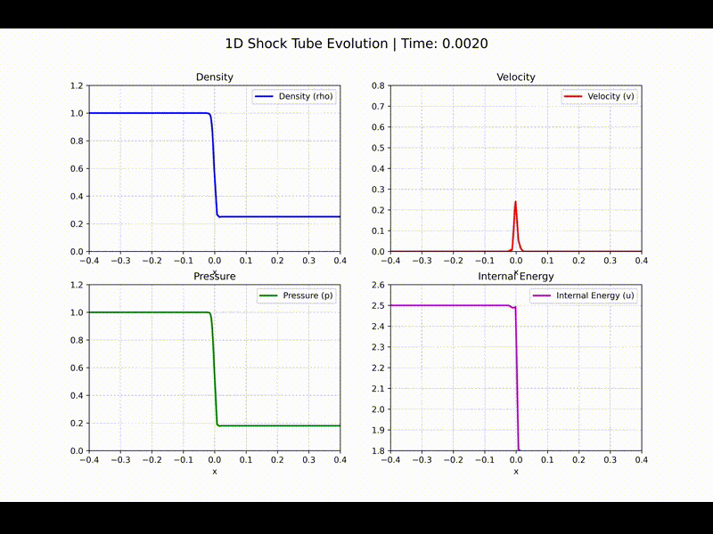
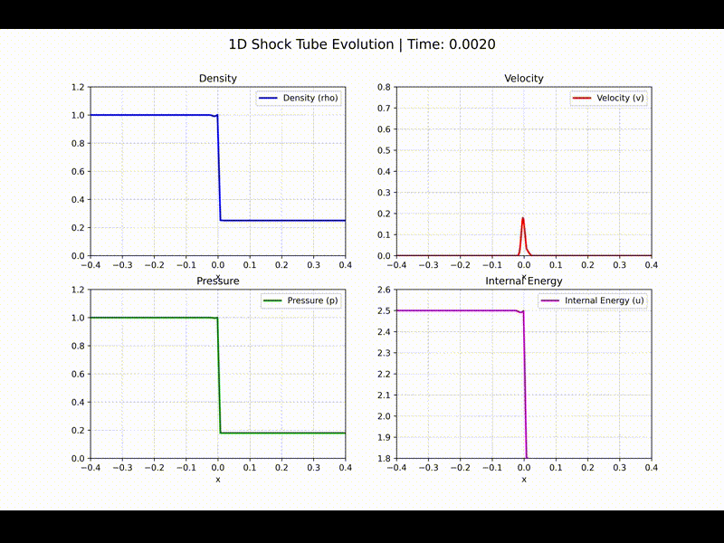
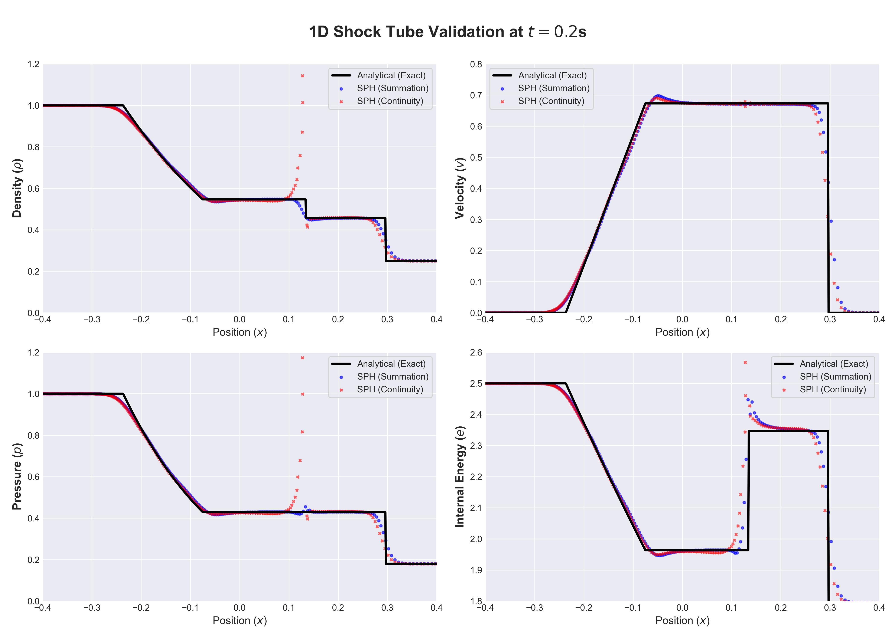

1D Sod 激波管实验
省流
本文使用从零自研的 CUDA SPH 物理引擎复现了经典的 1D Sod 激波管 (Shock Tube) 基准测试，主要验证引擎对强激波不连续面的捕捉能力。测试中解决了一个关键的数值陷阱：在处理初始阶跃密度场时，传统的连续性方程 (Continuity Density) 会导致严重的非物理震荡，而直接求和密度 (Summation Density) 展现出了更好的鲁棒性。事实上，连续密度更适合用在高速冲击问题中。
---
1. 模拟结果
以下是两种密度计算方法的效果对比：


- 左图 (成功)：采用求和密度法，可以清晰看到激波波前、接触间断和稀疏波的光滑推进。
- 右图 (失败)：采用连续密度法，在激波管的初始密度阶跃处产生了震荡。

图 1：Sod 激波管密度分布对比。展示了三种方法在 $t=0.2$ 时刻的密度沿 $x$ 方向分布与解析解的对比。红色实线为解析解，蓝色点为求和密度法的数值结果，橙色点为连续密度法的数值结果。
---
2. 问题背景
2.1 什么是 Sod 激波管？
Sod 激波管是流体力学中经典的基准测试问题，用于验证数值方法对激波、接触间断和稀疏波的捕捉能力。该问题模拟了一维管道中由薄膜分隔的两种不同状态气体的瞬时释放过程。
2.2 物理模型
本模拟采用理想气体模型，方程组包括：
连续性方程： $$\frac{\partial \rho}{\partial t} + \nabla \cdot (\rho \mathbf{v}) = 0$$
动量方程： $$\frac{\partial (\rho \mathbf{v})}{\partial t} + \nabla \cdot (\rho \mathbf{v} \otimes \mathbf{v}) = -\nabla p$$
能量方程： $$\frac{\partial (\rho e)}{\partial t} + \nabla \cdot (\rho e \mathbf{v}) = -p \nabla \cdot \mathbf{v}$$
状态方程（理想气体）： $$p = (\gamma - 1) \rho e$$
其中 $\gamma = 5/3$ 为绝热指数。
---
3. 初始条件
初始时刻，激波管被位于 $x=0$ 的薄膜分为左右两个区域：
| 参数 | 高密度区 (左) | 低密度区 (右) |
|---|---|---|
| 密度 $\rho$ | 1.0 | 0.25 |
| 速度 $v$ | 0.0 | 0.0 |
| 内能 $e$ | 2.5 | 1.795 |
| 粒子间距 $\Delta x$ | 0.001875 | 0.0075 |
| 软化长度 $h$ | 0.01 | 0.01 |
| 区域范围 | $[-1.2, 0)$ | $(0, 1.2]$ |
| 粒子数 | 640 | 160 |
总粒子数：800 个
初始条件设置使得左侧为高压高密度区，右侧为低压低密度区。薄膜移除后，左侧的高压气体会向右加速，形成激波、接触间断和稀疏波三种波结构。
---
4. 数值方法
4.1 SPH 密度计算方式
本测试对比了两种 SPH 密度计算方法：
方法一：求和密度 (Summation Density)
$$\rho_i = \sum_j m_j W(r_{ij}, h)$$
其中 $W(r, h)$ 为核函数，$h$ 为软化长度。这种方法直接对邻域粒子的质量进行求和，物理意义明确。
方法二：连续密度 (Continuity Density)
$$\frac{d\rho_i}{dt} = \sum_j m_j (v_j - v_i) \cdot \nabla_i W(r_{ij}, h)$$
该方程通过对动量方程进行散度运算得到，理论上与连续性方程等价。
后续计划
- 2/3D 溃坝模拟
- 带物质强度的模拟
---
参考资料
- Sod, G. A. (1978). A survey of several finite difference methods for systems of nonlinear hyperbolic conservation laws. Journal of Computational Physics, 27(1), 1-31.
- Monaghan, J. J. (1992). Smoothed particle hydrodynamics. Annual Review of Astronomy and Astrophysics, 30, 543-574.
- Liu, G. R., & Liu, M. B. (2003). Smoothed particle hydrodynamics: a meshfree particle method. World Scientific.